Chapter 16. C++ 파일 입출력¶
'명품 C++Programming - 황기태' 12장 학습 내용
1절. 텍스트 파일과 바이너리 파일
2절. C++ 파일 입출력
3절. 파일 모드
4절. 텍스트 I/O와 바이너리 I/O
5절. 스트림 상태
6절. 파일 포인터
1절. 텍스트 파일과 바이너리 파일¶
텍스트 파일¶
- 사람들이 사용하는 글자 혹은 문자들로만 구성되는 파일
- 알파벳, 한글, 숫자, % # @ < ? 등의 기호 문자
- '\n', '\t' 등의 특수 문자도 포함
- 각 문자마다 문자 코드(이진수) 할당
- 아스키 코드, 유니 코드
- 텍스트 파일의 종류
- txt 파일, HTML 파일, XML 파일, C++ 소스 파일, C 소스 파일, 자바 소스 파일
- 텍스트 파일과
키 키를 입력하면 텍스트 파일에 '\r', '\n'의 두 코드가 기록 - 아스키 코드 표 샘플
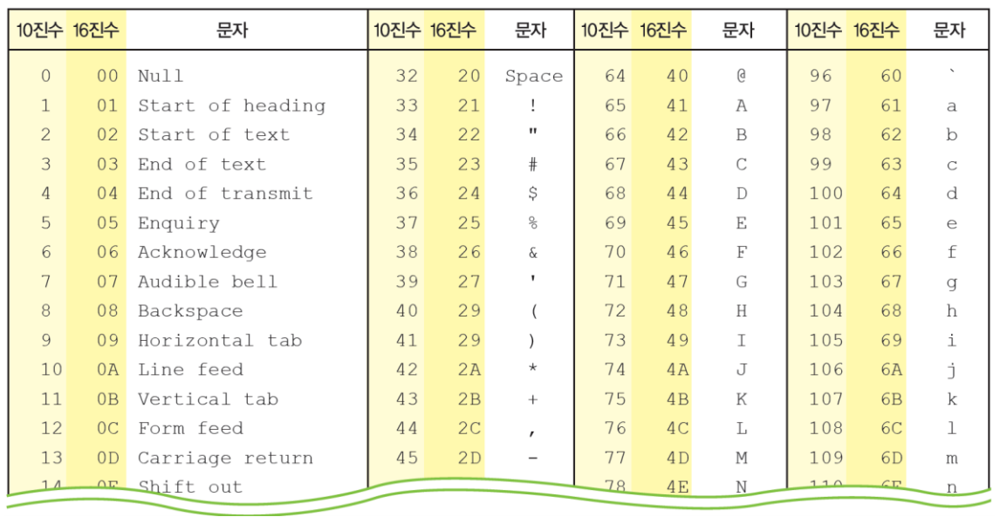
텍스트 파일의 내부¶
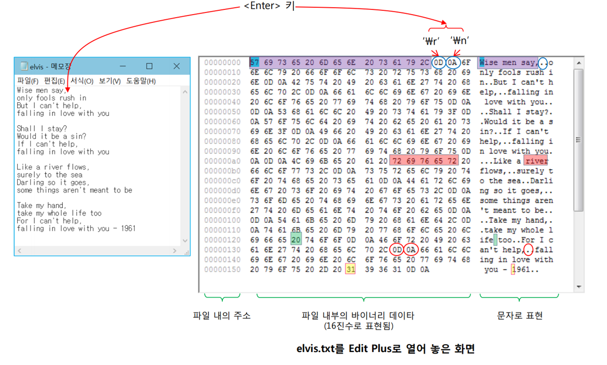
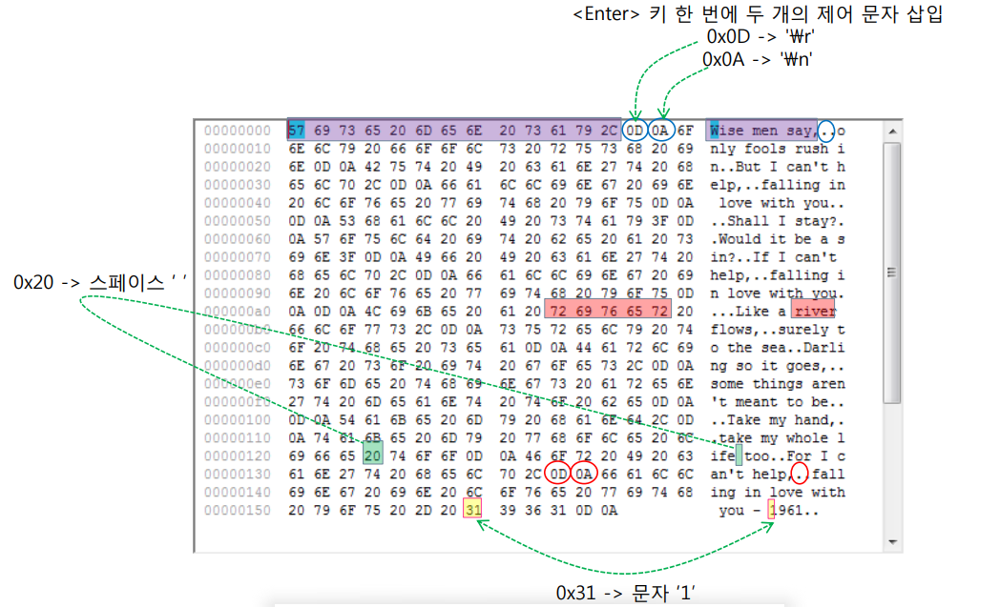
바이너리 파일¶
- 문자로 표현되지 않는 바이너리 데이터가 기록된 파일
- 이미지, 오디오, 그래픽, 컴파일된 코드는 문자로 표현되지 않음
- 텍스트 파일의 각 바이트 -> 문자로 해석
- 바이너리 파일의 각 바이트 -> 문자로 해석되지 않는 것도 존재
- 각 바이트의 의미는 파일을 만든 응용프로그램만이 해석 가능
- 바이너리 파일의 종류
- jpeg, bmp 등의 이미지 파일
- mp3 등의 오디오 파일
- hwp, doc, ppt 등의 확장자를 가진 멀티미디어 문서 파일
- obj, exe 등의 확장자를 가진 컴파일된 코드나 실행 파일
바이너리 파일의 내부¶
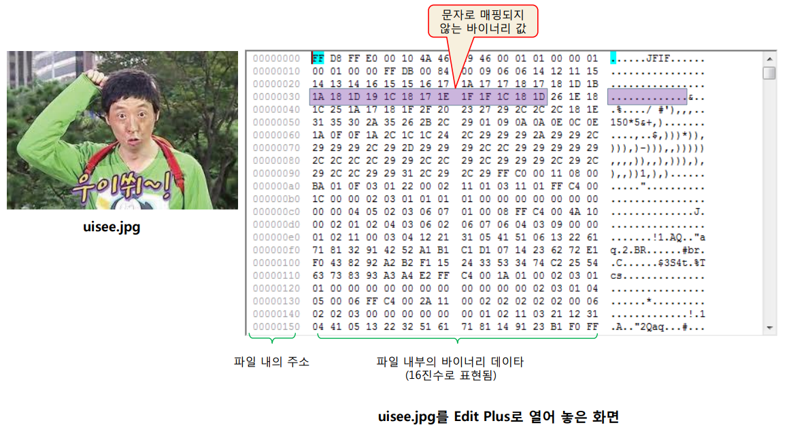
hwp 파일은 바이너리 파일¶
- 텍스트 정보 포함
- 한글, 영어 문자 포함
- 바이너리 정보 포함
- 글자 색이나 서체 등의 문자 포맷 정보
- 비트맵 이미지
- 표
- 선, 원 등의 그래픽 정보
- 왼쪽 마진, 오른쪽 마진 등 문서 포맷 정보
2절. C++ 파일 입출력¶
C++ 표준 파일 입출력 라이브러리¶
- 스트림 입출력 방식 지원
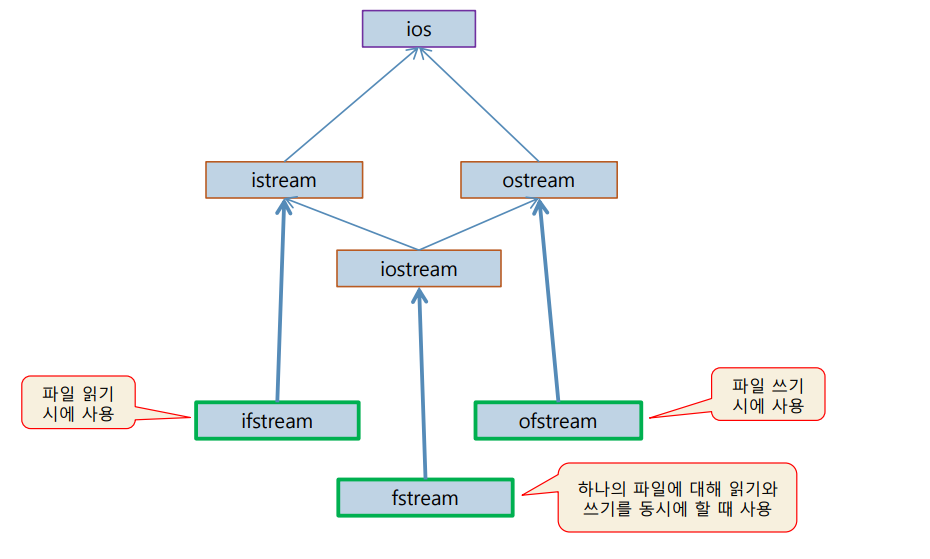
템플릿에 char 타입으로 구체화한 클래스¶
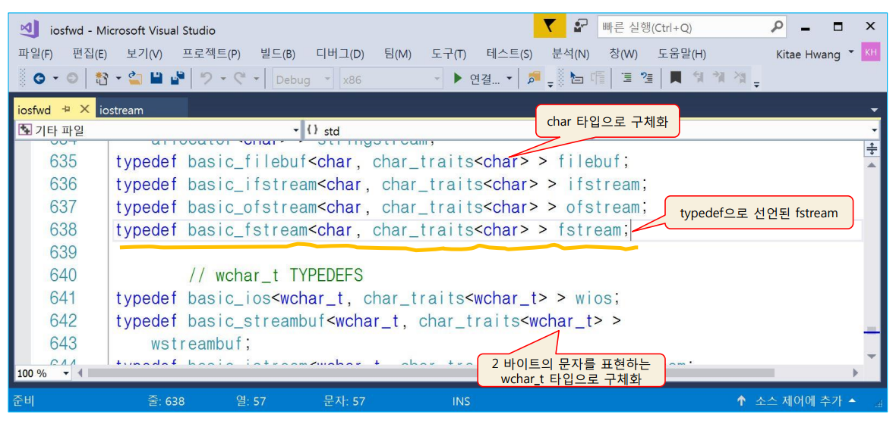
파일과 프로그램을 연결하는 파일 입출력 스트림¶
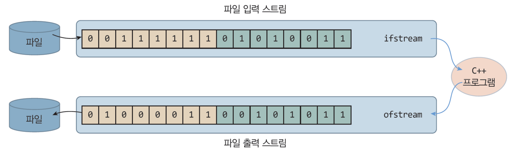
-
연산자와 istream의 get(), read() 함수
- 연결된 장치로부터 읽는 함수
- 키보드에 연결되면 키 입력을, 파일에 연결되면 파일에서 입력
- << 연산자와 ostream의 put(), write() 함수
- 연결된 장치에 쓰는 함수
- 스크린에 연결되면 화면에, 파일에 연결되면 파일에 출력
헤더 파일과 namespace¶
- C++ 파일 입출력 라이브러리 사용
- fstream 헤더 파일과 std 이름 공간의 선언 필요
파일 입출력 모드 : 텍스트 I / O와 바이너리 I / O¶
- 파일 입출력 방식
- 텍스트 I / O와 바이너라 I / O의 두 방식
- C++ 파일 입출력 클래스(ifstream, ofstream, fstream)는 두 방식 지원
- 텍스트 I / O
- 문자 단위로 파일에 쓰기, 파일에서 읽기
- 문자를 기록하고, 읽은 바이트를 문자로 해석
- 텍스트 파일에만 적용
- 바이너리 I / O
- 바이트 단위로 파일에 쓰기, 파일에서 읽기
- 데이터를 문자로 해석하지 말고 그대로 기록하거나 읽음
- 텍스트 파일과 바이너리 파일 모두 입출력 가능
- 텍스트 I / O와 바이너리 I / O 입출력 시 차이점
- 개행 문자('\n')를 다루는데 차이점 존재
<< 연산자를 이용한 간단한 파일 출력¶
ofstream fout;
// 파일 쓰기를 위한 스트림 생성
fout.open("song.txt");
// song.txt 파일 열기
// ofstream fout("song.txt"); 한 줄로 줄여 쓰기 가능
if(!fout){
// fout 스트림의 파일 열기가 실패한 경우 파일 열기 실패를 처리하는 코드
// 파일 열기 성공 검사로, operator !() 실행
// if(!fout.is_open())과 동일
}
int age = 21;
char singer[] = "Kim";
char song[] = "Yesterday";
// 파일 쓰기 예시
fout << age << "\n";
// 파일에 21과 '\n'을 기록
fout << singer << endl;
// 파일에 "Kim"과 '\n'을 덧붙여 기록
fout << song << endl;
// 파일에 "Yesterday"와 '\n'을 덧붙여 기록
fout.close();
// 파일 닫기
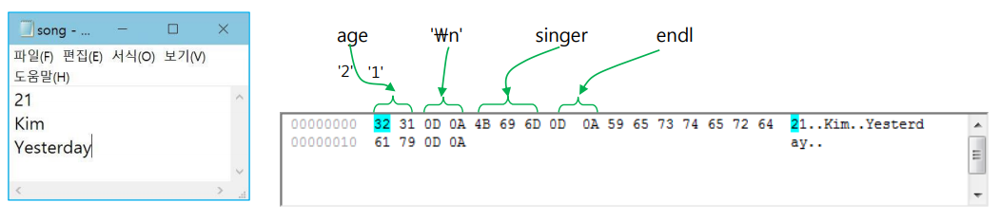
-
예제 1. 키보드로 입력받은 텍스트 파일 저장 예제
SourceCodeChecking -
예제 2. ifstream과 >> 연산자로 텍스트 파일 읽기 예제
SourceCodeChecking
3절. 파일 모드¶
파일 모드(file mode)¶
- 파일 입출력에 대한 구체적인 작업 형태에 대한 지정
- 사례
- 파일에서 읽을 작업을 할 것인지, 쓰기 작업을 할 것인지
- 기존 파이르이 데이터를 모두 지우고 쓸 것인지, 파일의 끝 부분에 쓸 것인지
- 텍스트 I / O 방식인지 바이너리 I / O 방식인지
파일 모드 지정 : 파일 열 때¶
- open("파일 이름", 파일 모드)
- ifstream("파일 이름", 파일 모드)
- ofstream("파일 이름", 파일 모드)
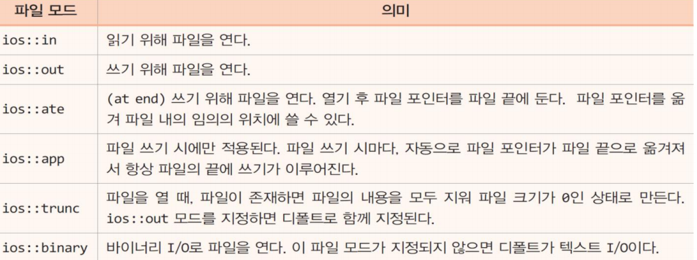
파일 모드 설정¶
- student.txt 파일에서 처음부터 읽고자 하는 경우
- student.txt 파일의 끝에 데이터를 저장하는 경우
ofstream fout;
fout.open("student.txt", ios::out | ios::app);
fout << "tel:01044447777";
// 기존의 stduent.txt 끝에 "tel:01044447777"을 추가하여 저장
- 바이너리 I / O로 data.bin 파일을 기록하는 경우
fstream fbinout;
fbinout.open("data.bin", ios::out | ios:: binary);
char buf[128];
...
fbinout.write(buf, 128);
// buf에 있는 128 바이트를 파일에 기록
- 예제 3. get()을 이용한 텍스트 파일 읽기 예제
SourceCodeChecking
get()과 EOF¶
- 파일의 끝에서 읽기를 시도하면 get()은 EOF(-1값)를 리턴
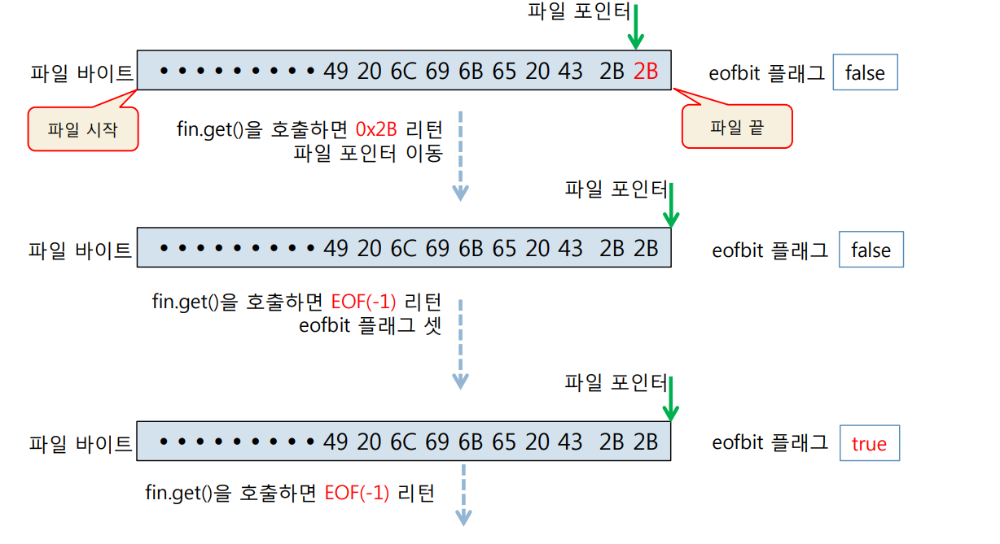
get()으로 파일의 끝을 인지하는 방법¶
- 방법 1
// case 1
while(true){
int c = fin.get();
// 파일에서 문자(바이트)를 읽음
if(c == EOF){
... // 파일의 끝을 만난 경우 이에 대응하는 코드 작성
break;
// while 루프문 탈출
}
else{
// 읽은 문자(바이트) c 처리
}
}
- 방법 2
파일의 끝을 잘못 인지하는 코드¶
- EOF 값을 c에 읽어 사용한 후 다음 루프의 while 조건문에서 EOF에 도달한 사실을 알게 되기 때문에 잘못된 코드
4절. 텍스트 I/O와 바이너리 I/O¶
텍스트 파일의 라인 단위 읽기¶
- 두 가지 방법
- istream의 getline(char*line, int n) 함수 이용
- getline(ifstream& fin, string& line) 함수 이용
- 라인 단위로 텍스트 파일을 읽는 코드 2가지
- istream의 getline() 함수 이용
char buf[81];
// 한 라인이 최대 80개의 문자로 구성된다고 가정
ifstream fin("c:\\windows\\system.ini");
while(fin.getline(buf, 81){ // 한 라인이 최대 80개의 문자로 구성되었으며 끝에 '\0' 문자 추가
... // 읽은 라인(buf[])을 활용하는 코드
}
- 전역 함수 getline(ifstream& fin, string& line) 함수 이용
string line;
ifstream fin("c:\\windows\\system.ini");
while(getline(fin, line){ // 한 라인을 읽어 line에 저장한 후 파일 끝까지 반복
... // 읽은 라인(line)을 활용하는 코드
}
-
예제 4 참고 이미지
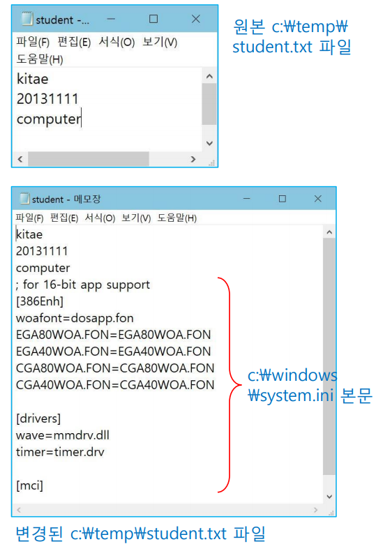
-
예제 4. 텍스트 파일 연결 예제
SourceCodeChecking -
예제 5. istream의 getline()을 이용하여 텍스트 파일을 읽고 화면에 출력하는 예제
SourceCodeChecking -
예제 6. getline(ifstream&, string&)으로 words.txt 파일을 읽고 단어 검색하는 예제
SourceCodeChecking
바이너리 I/O¶
- 바이너리 I/O 방식
- 데이터의 바이너리 값을 그대로 파일에 저장
- 파일의 바이너리 값을 그래도 읽어서 변수나 버퍼에 저장
- 텍스트 파일이든 바이너리 파일이든 바이너리 I/O로 입출력 가능
- 바이너리 I/O 모드 열기
- ios::binary가 설정되지 않으면 디폴트가 텍스트 I/O
ifstream fin;
fin.open("desert.jpg", ios::in | ios::binary);
// 바이너리 I/O로 파일 읽기
ofstream fout("desert.jpg", ios::out | ios::binary); // 바이너리 I/O로 파일 쓰기
fstream fsin("desert.jpg", ios::in | ios::binary); // 바이너리 I/O로 파일 읽기

- 예제 7. 바이너리 I/O로 파일 복사 예제
SourceCodeChecking
read()/write()로 블록 단위 파일 입출력¶
- get() / put()
- 문자 혹은 바이트 단위로 파일 입출력
- read() / write()
- 블록 단위로 파일 입출력
istream& read(char* s, int n);
// 파일에서 최대 n개의 바이트를 배열 s에 읽으며 파일의 끝을 만나면 읽기 중단
ostream& write(char* s, int n);
// 배열 s에 있는 처음 n개의 바이트를 파일에 저장
int gcount();
// 최근에 파일에서 읽은 바이트 수 리턴
-
예제 8. read()로 텍스트 파일을 바이너리 I/O로 읽는 예제
SourceCodeChecking -
예제 9. read()/write()로 이미지 파일 복사 예제
SourceCodeChecking -
예제 10 참고 이미지
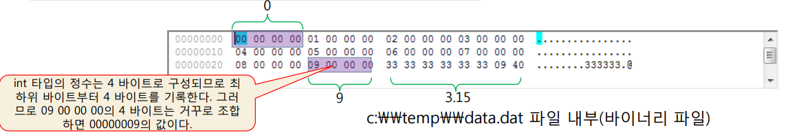
-
예제 10. int 배열과 double 값을 바이너리 파일에 저장하고 읽는 예제
SourceCodeChecking
텍스트 I/O와 바이너리 I/O의 확실한 파이점¶
- 파일의 끝을 처리하는 방법에는 차이가 없음
- 텍스트 I/O든 바이너리 I/O든 파일의 끝을 만나면 EOF 리턴
- 개행 문자 '\n'를 읽고 쓸 때 서로 다르게 작동
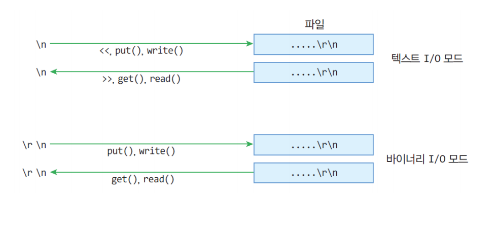
텍스트 I/O와 바이너리 I/O의 실행 결과 비교¶
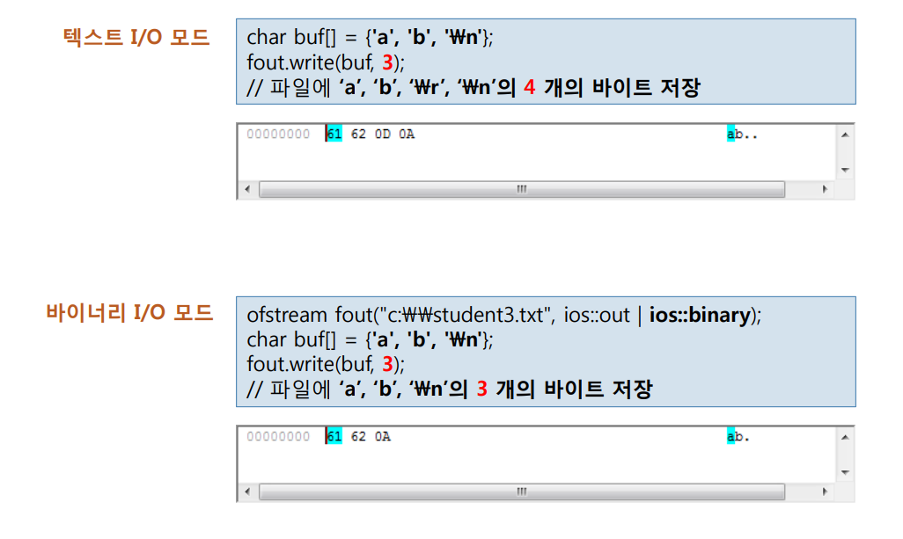
5절. 스트림 상태¶
스트림 상태 검사¶
- 스트림 상태
- 파일 입출력이 진행되는 동안 스트림(열어 놓은 파일)에 관한 입출력 오류 저장
- 스트림 상태를 저장하는 멤버 변수 이용
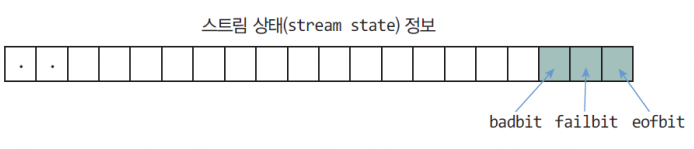
스트림 상태를 나타내는 비트 정보¶
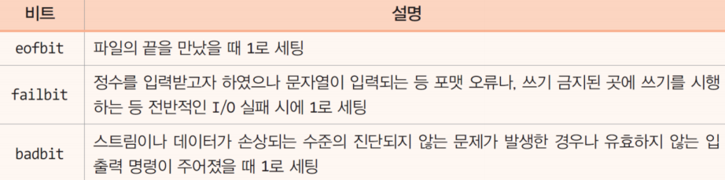
스트림 상태를 검사하는 멤버 함수¶
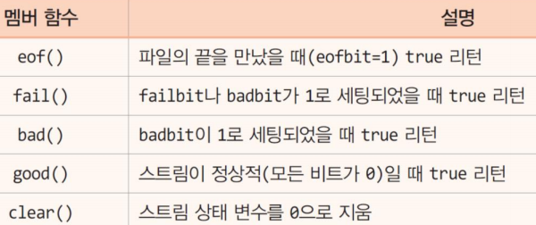
- 예제 11. 스트림 상태 검사 예제
SourceCodeChecking
6절. 파일 포인터¶
C++ 파일 입출력 방식¶
- 순차 접근
- 읽은 다음 위치에서 읽고 쓴 다음 위치에 쓰는 방식
- 디폴트 파일 입출력 방식
- 임의 접근
- 파일 내의 임의의 위치로 옮겨 다니면서 읽고 쓸 수 있는 방식
- 파일 포인터를 옮겨 파일 입출력
파일 포인터¶
- 파일은 연속된 바이트의 집합
- 파일 포인터
- 파일에서 다음에 읽거나 쓸 위치를 표시하는 특별한 마크
- C++는 알려진 파일마다 두 개의 파일 포인터 유지
- get pointer : 파일 내 다음에 읽을 위치
- put pointer : 파일 내 다음에 쓸 위치
파일 모드와 파일 포인터¶
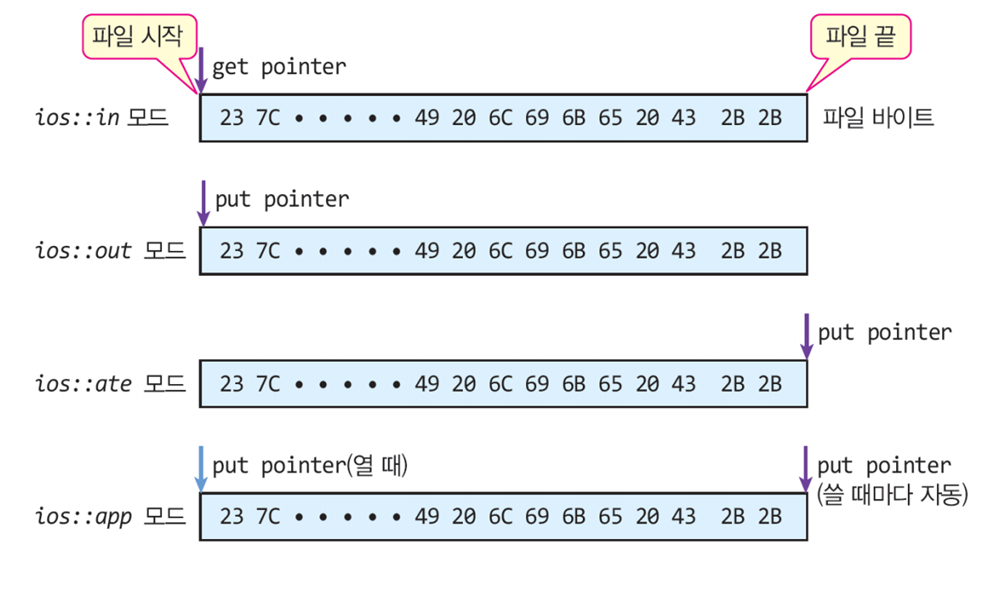
임의의 접근 방법¶
- 파일 포인터 제어
- 절대 위치로 이동시키는 방법과 상대 위치로 이동시키는 두 방법
// istream의 두 방법
istream& seekg(streampos pos);
// 정수 값으로 주어진 절대 위치 pos로 get pointer를 옮김
istream& seekg(streamoff offset, ios::seekdir seekbase);
// seekbase를 기준으로 offset만큼 떨어진 위치로 get pointer를 옮김
// ostream의 두 방법
ostream& seekp(streampos pos);
// 정수 값으로 주어진 절대 위치 pos로 put pointer를 옮김
ostream& seekp(streamoff offset, ios::seekdir seekbase);
// seekbase를 기준으로 offset만큼 떨어진 위치로 put pointer를 옮김
// streampos의 두 방법
streampos tellg();
// 입력 스트림의 현재 get pointer의 값 리턴
streampos tellp();
// 출력 스트림의 현재 put pointer의 값 리턴
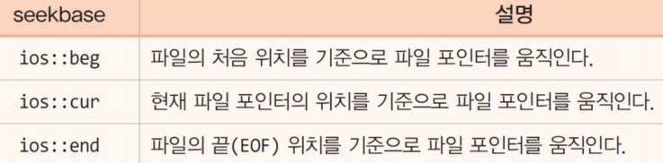
seekg()에 의한 get pointer의 이동 사례¶
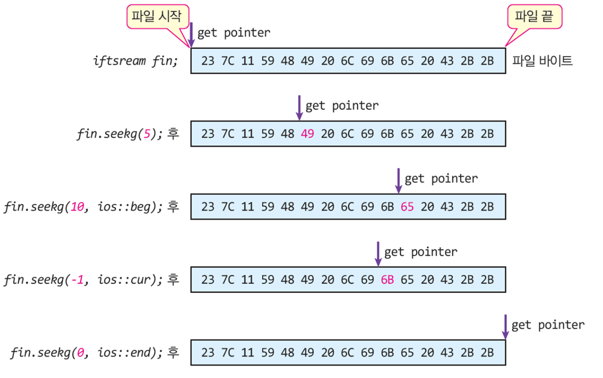
-
예제 12 참고 이미지
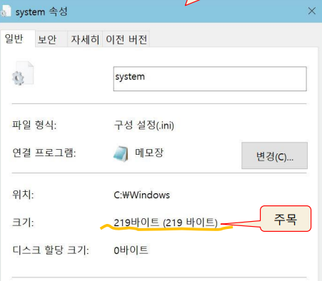
-
예제 12. 파일 크기 알아내기 예제
SourceCodeChecking